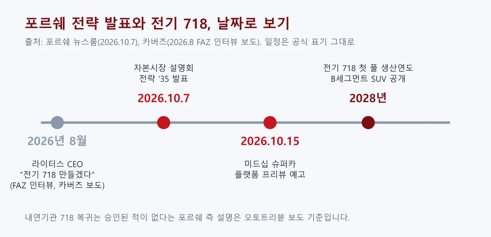
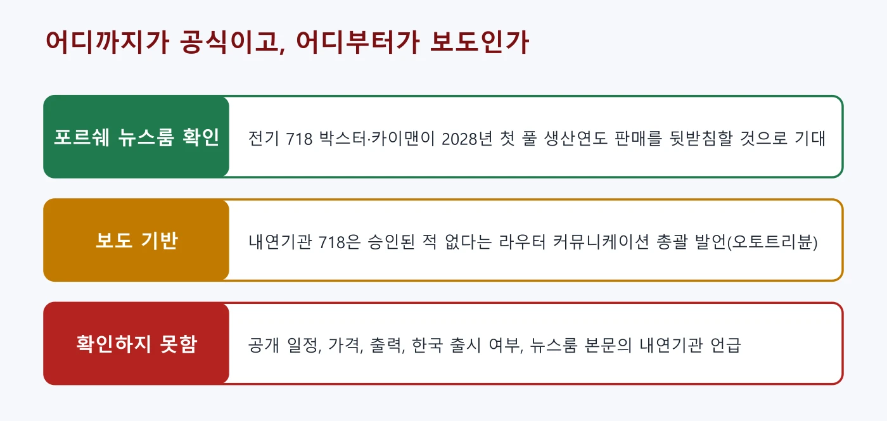
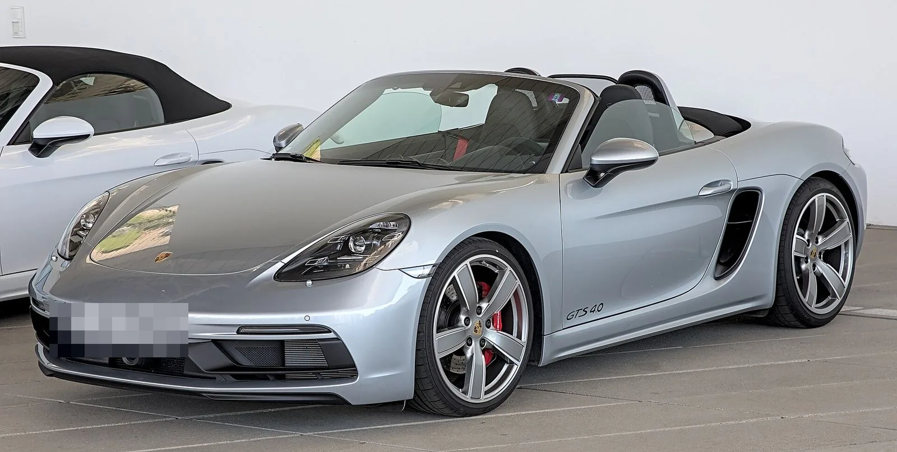
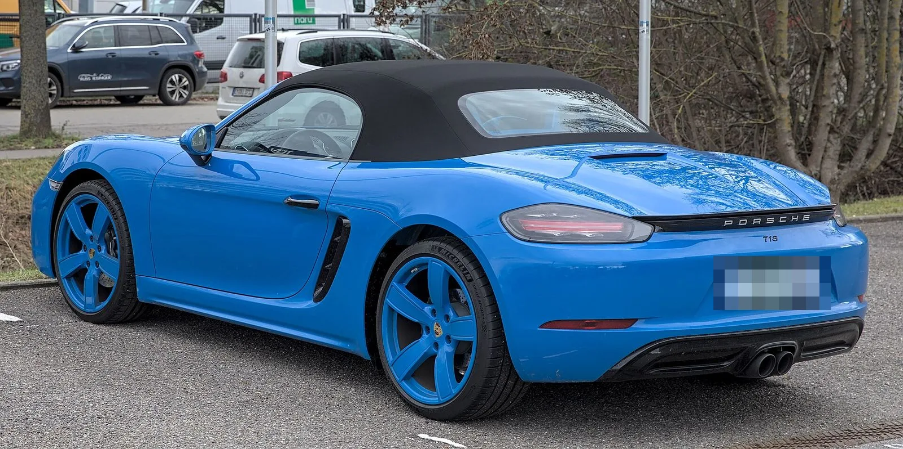
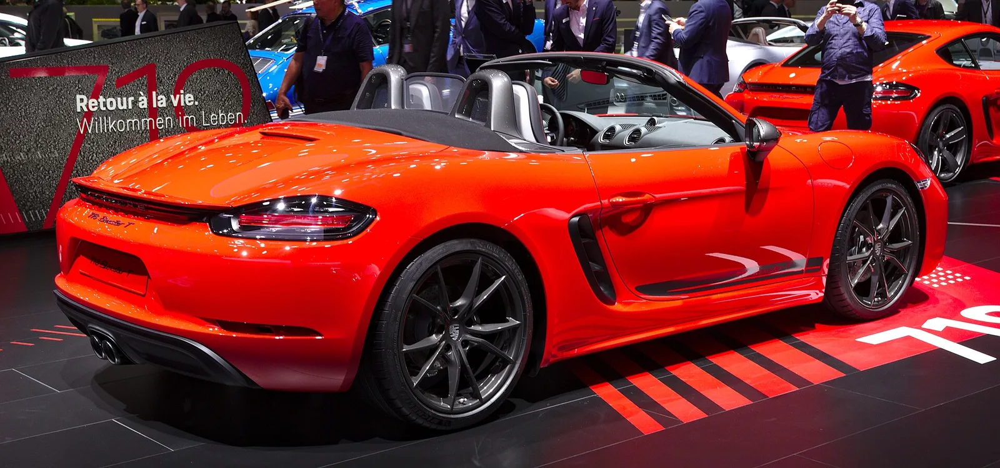
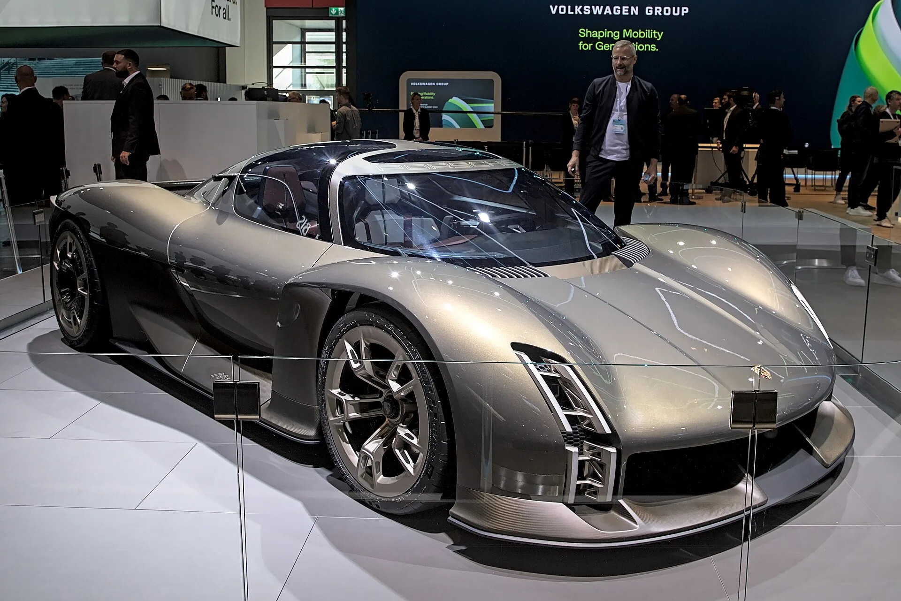

▲ 현행 내연기관 718 카이맨 S — 후속은 순수 전기 모델로 시작한다
"전기 718은 2028년 첫 풀 생산연도." 2026년 10월 7일 포르쉐가 자본시장 설명회에서 2035년까지의 전략 '슈포르트바겐슈미데 '35'를 발표하면서, 차세대 718 박스터·카이맨이 순수 전기 모델로 시작한다고 밝혔다. 엔진을 얹은 후속이 없다는 내용은 뉴스룸이 아니라 포르쉐 측 발언을 전한 보도에 있다. 다만 "확정"의 정확한 내용은 헷갈리기 쉽다. 포르쉐 뉴스룸이 직접 밝힌 것은 "전기 718이 2028년 첫 풀 생산연도 판매를 뒷받침할 것으로 기대한다"는 문장이고, 내연기관 718 복귀가 "취소"됐다는 해석은 포르쉐 측 발언을 전한 보도에 의존한다. 이 글은 포르쉐 뉴스룸을 기준으로 공식 확인과 보도 기반을 나눠 정리했고, 한국 판매 영향은 공식 발표가 없어 확인된 범위만 적었다. 이미 다룬 단종 모델 목록은 2026년 사라진 차 기사, 포르쉐의 실적 배경은 폭스바겐·포르쉐 평가손실 기사에서 볼 수 있다.
1. 무엇이 발표됐나 — 10월 7일 자본시장 설명회
포르쉐는 2026년 10월 7일 설명회에서 "새 스포츠카, 더 높은 희소성, 더 강한 수익성"을 내세운 2035년 전략을 공개했다. 뉴스룸에 따르면 전략은 브랜드·고객, 제품·기술, 기업·운영, 지원 요소, 재무 목표의 5개 장으로 구성된다. 마이클 라이터스 CEO는 "당면 우선순위는 비용을 줄이고 회사를 재무적으로 더 튼튼하게 만드는 것"이라고 말했다. 뉴스룸 원문은 포르쉐 뉴스룸 원문 바로가기 에서 확인할 수 있다.
| 항목 | 뉴스룸 표기 |
|---|---|
| 718 박스터·카이맨 | 순수 전기 모델로 시작, 2028년 첫 풀 생산연도 판매를 뒷받침할 것으로 기대 |
| B세그먼트 SUV | 2028년 공개, 현행 순수 전기 마칸과 병행 판매, 내연기관·플러그인 하이브리드 구동 |
| D세그먼트 SUV | 카이엔 위 SUV를 "검토 중"(확정 아님) |
| 미드십 슈퍼카 | 플랫폼 개발 발표, 10월 15일 프리뷰 예고("잠재적" 플랫폼) |
| 중기 재무 목표 | 그룹 영업이익률 10~15%, 그룹 매출 410억~450억 유로 |

▲ 2026년 8월 인터뷰부터 2028년 전기 718 첫 풀 생산연도까지의 일정 도표: 카프리즘 (포르쉐 뉴스룸·카버즈 기준)
뉴스룸 본문에는 가격, 출력, 배터리 용량 같은 718 세부 제원이 없다. 공개 일정 역시 적혀 있지 않다. 따라서 "718이 언제 나오느냐"는 질문에 포르쉐가 공식적으로 답한 숫자는 2028년 첫 풀 생산연도뿐이다.
2. '확정'의 정확한 내용 — 공식과 보도를 나눠 보면
공식 확인과 보도 기반을 섞으면 "내연기관 718 취소 확정"이라는 과장된 제목이 나온다. 오토트리뷴은 10월 8일 기사에서 포르쉐가 10월 7일 설명회에서 전략을 공개했고, 차세대 718 박스터·카이맨이 순수 전기차로 출시되며 2028년에 연중 생산 체제를 갖출 예정이라고 전했다. 같은 기사는 공개와 인도 일정은 발표되지 않았다고 적었다. 기사는 오토트리뷴 기사 바로가기 에서 볼 수 있다.

▲ 어디까지가 포르쉐 공식 자료이고 어디부터가 보도인지 구분한 표 도표: 카프리즘
전기차 전문 매체 일렉트렉(2026년 10월 7일자)은 투자자 설명회 자료에서 718이 "순수 전기 모델"로 표기됐고 2028년이 "첫 풀 생산연도"로 적혔다고 전했다. 이는 뉴스룸 표기와 일치한다. 다만 일렉트렉이 본 설명회 자료를 카프리즘이 직접 확인하지는 못했다.
🔎 "2028년"을 읽을 때
· 뉴스룸 표기는 "첫 풀 생산연도"이지 "공개 연도"나 "인도 시작 연도"가 아니다
· 공개 일정은 포르쉐가 밝히지 않았다(오토트리뷴)
· 일부 매체의 "내년 공개" 같은 표현은 뉴스룸에서 확인되지 않는 해석이다
3. "내연기관 718 복귀설"은 어디서 나왔고, 무엇이 정리됐나
포르쉐 기업 커뮤니케이션 총괄 마티아스 라우터는 내연기관 718 복귀가 확정된 적이 없다고 밝혔다. 오토트리뷴에 따르면 그는 승인된 개발 계획이 아니었으므로 공식적으로 "취소"된 것은 아니라고 설명했고, 가솔린 엔진을 얹은 새 박스터·카이맨은 계획에 없다고 했다. 이전 검토안은 차세대 718에 전기차와 내연기관을 함께 두고 내연기관은 최상위 버전에만 두는 구상이었으며, 수평대향 6기통이 거론됐지만 확정안이 아니었고 이번 전략에는 포함되지 않았다.

▲ 718 박스터 GTS 4.0(Commons 파일명 기준). 현행 내연기관 718이다 ⓒ Alexander Migl / Wikimedia Commons (CC BY-SA 4.0), 번호판 모자이크 처리
이 발언은 오토트리뷴 한 곳의 한국어 기사로 확인한 것이다. 같은 취지의 보도를 다른 외신이 낸 것으로 검색에서 확인되지만 본문은 열어보지 못했다. 한편 뉴스룸 본문에는 내연기관 718에 대한 언급이 없어, "내연기관 718 불가"는 뉴스룸이 아니라 포르쉐 측 발언을 전한 보도에 근거한다.
혼란은 여름부터 이어졌다. 카버즈는 2026년 8월 라이터스 CEO가 독일 프랑크푸르터 알게마이네 차이퉁 인터뷰에서 "전기 718과 관련해 우리는 이 모델을 만들기로 결론 내렸다"고 말했다고 보도했다(독일어 인터뷰의 번역, 인터뷰 날짜는 기사에 없음). 같은 기사는 전기 718이 아우디 콘셉트 C 양산형과 플랫폼을 공유할 것이라고 전했지만, 이는 매체 보도이며 포르쉐 뉴스룸에서는 확인하지 못했다.
4. 내연기관 718은 이미 사라진 상태 — 왜 2028년까지 공백인가
일렉트렉은 내연기관 718이 2025년에 생산을 마쳤다고 전했다. 2024년 카스쿱스는 포르쉐 대변인의 말을 인용해 유럽연합 사이버보안 규정(UN R155) 때문에 내연기관 718이 2024년 7월 이후 유럽에서 신규 등록이 어려워진다고 전했다. "2025년 10월 생산 종료"는 2024년 6월 미국 딜러 포털 화면 유출로 먼저 알려졌고, 2025년 5월 포르쉐 북미법인 제품 커뮤니케이션 책임자가 여러 매체에 같은 해 10월 종료를 확인했다고 PAS 매거진이 전했다(간접 인용, 카프리즘이 포르쉐 원문은 확인하지 못함). 따라서 이번 발표로 새로 정해진 것은 "엔진을 얹은 후속은 없다"는 점과 "전기 718의 첫 풀 생산연도가 2028년"이라는 점이다.

▲ 내연기관 718 박스터의 뒷모습. 번호판은 모자이크 처리했다 ⓒ Alexander-93 / Wikimedia Commons (CC BY-SA 4.0), 번호판 모자이크 처리
| 시점 | 내용 | 확인 수준 |
|---|---|---|
| 2024년 | 유럽 사이버보안 규정 대응 문제로 유럽 신규 등록 제한 보도 | 카스쿱스 등 보도(2024) |
| 2025년 | 내연기관 718 생산 종료(10월 예정, 북미법인 확인 보도) | PAS 매거진(2025.5)·일렉트렉 보도 |
| 2026년 8월 | 라이터스 CEO "전기 718을 만들기로 결론" | 카버즈의 FAZ 인용 보도 |
| 2026.10.7 | 자본시장 설명회, 718은 순수 전기로 시작 | 포르쉐 뉴스룸 |
| 2028년 | 전기 718 첫 풀 생산연도 | 포르쉐 뉴스룸 |
기존 카프리즘 기사 2026년 사라진 차 기사는 718의 단종 시점과 전기 후속의 "2027년 이후" 출시를 다뤘다. 이번 공식 표기는 첫 풀 생산연도가 2028년이라는 것이어서 "2027년 이후"와 모순되지는 않지만, 단종 시점(2025년 10월)은 딜러 문서로 먼저 알려진 뒤 포르쉐 북미법인이 확인했다는 보도에 근거한다는 점을 함께 알아두는 것이 좋다.
5. 전기 718은 어떤 차가 될까 — 확인된 것과 아닌 것
배터리를 시트 뒤에 둬서 미드십 스포츠카의 무게 배분을 지키려 했다는 것이 일렉트렉이 전한 가장 구체적인 정보다. 일렉트렉은 카앤드라이버가 바이작 시험 코스 부근에서 시제차에 동승 시승했다는 내용을 인용했다. 이 매체는 내연기관 박스터의 후륜 무게 배분이 59.8%였고 전기 시제차는 55.2%라고 적었다. 포르쉐 공식 자료에서는 확인하지 못한 수치이며, 시제차 기준이라 양산차는 달라질 수 있다.

▲ 2019년 제네바 모터쇼에 전시된 718 박스터 T(Commons 파일명 기준) ⓒ Alexander Migl / Wikimedia Commons (CC BY-SA 4.0)
| 항목 | 내용 | 출처 |
|---|---|---|
| 구동 | 순수 전기 | 포르쉐 뉴스룸·일렉트렉 |
| 첫 풀 생산연도 | 2028년 | 포르쉐 뉴스룸 |
| 배터리 위치 | 시트 뒤(시제차 동승 보도) | 일렉트렉(카앤드라이버 인용) |
| 후륜 무게 배분 | 내연 59.8% → 전기 시제차 55.2% | 일렉트렉 |
| 플랫폼 | 아우디 콘셉트 C 양산형과 공유 | 카버즈 보도 |
| 출력·가격·주행거리 | 확인하지 못함 | - |
같은 영역에서 경쟁할 전기 스포츠카 소식으로는 알핀이 3세대 A110을 전기 스포츠카로 준비 중이라는 점이 있다. 자세한 내용은 알핀 3세대 A110 디자인 공개 기사에서 다뤘다. 오토트리뷴은 케이터햄도 전기 쿠페를 개발 중이라고 적었다.
6. 718 말고 전략에 담긴 것 — 마칸, B세그먼트 SUV, 슈퍼카
포르쉐는 전기차에서 완전히 손을 뗀 것이 아니라 속도와 폭을 조정했다. 뉴스룸에는 2028년에 B세그먼트 SUV를 공개해 현행 순수 전기 마칸과 병행 판매하며, 이 SUV에는 내연기관·플러그인 하이브리드 구동계가 들어간다고 적혀 있다. 이 SUV는 2029년부터 판매와 수익성에 눈에 띄게 기여할 것으로 기대된다고 했다. 현재 순수 전기 마칸에 대해서는 포르쉐 마칸 일렉트릭 기사에서 다뤘다.

▲ 현재 포르쉐 라인업에서 순수 전기 SUV로 팔리는 마칸 일렉트릭 ⓒ Wikimedia Commons
911에 대해서는 뉴스룸이 "911의 DNA를 전 라인업에 더 강하게 반영한다"고 적었다. 일렉트렉은 라이터스 CEO가 설명회에서 "911은 절대 전기차가 되지 않을 것"이라고 말했다고 전했다. 포르쉐는 또 10월 15일에 미드십 슈퍼 스포츠카 플랫폼의 프리뷰를 내놓겠다고 예고했다. 이 플랫폼을 둘러싼 내연기관·전기 논쟁은 앞서 포르쉐 플래그십 슈퍼카 기사에서 정리했다. 이 슈퍼카의 구동 방식은 뉴스룸에 적혀 있지 않아 확인하지 못했다.

▲ 2023년 IAA 모빌리티에 전시된 포르쉐 미션 X 콘셉트. 이번에 예고된 미드십 슈퍼카 플랫폼과 같은 차는 아니다 ⓒ Wikimedia Commons
✅ 이 기사에서 확인할 점
· "확정"은 전기 718의 2028년 첫 풀 생산연도(뉴스룸)와 내연기관 후속 없음(보도)을 합친 표현이다
· 공개일, 가격, 출력은 아직 없다
· 10월 15일 슈퍼카 프리뷰는 718과 별개 프로젝트다
· 미국 일렉트렉·카버즈 수치는 포르쉐 공식 확인 전이다
7. 한국 독자에게는 어떤 의미일까
포르쉐코리아가 718 전기차의 국내 출시나 가격을 발표했다는 공식 자료는 확인하지 못했다. 본사 발표는 글로벌 전략이고, 한국 도입 여부와 시기는 별도로 정해진다. 따라서 "한국에서 718 전기차를 살 수 있다"거나 "국내 출시가 늦어진다"는 식의 서술은 근거가 없어 쓰지 않는다. 한국 포르쉐 조직 이야기는 포르쉐 판매조직 개편 기사에서 다뤘다.
현재 국내에서 718을 사려는 사람이라면 판매 가능 여부를 포르쉐코리아 공식 채널이나 전시장에서 직접 확인하는 것이 맞다. 내연기관 718은 이미 생산이 끝난 것으로 보도됐기 때문에 재고 외에는 신차를 구하기 어려울 수 있지만, 국내 재고 상황은 확인하지 못했다. 포르쉐 실적과 전동화 속도 조정의 배경은 평가손실 기사에서 숫자로 정리했다.
8. 요약
포르쉐는 2026년 10월 7일 자본시장 설명회에서 차세대 718 박스터·카이맨이 순수 전기 모델로 시작하며 2028년이 첫 풀 생산연도라고 밝혔다(뉴스룸). 내연기관 718 복귀는 승인된 계획이 아니었다는 마티아스 라우터 커뮤니케이션 총괄의 발언은 오토트리뷴 보도로만 확인된다. 공개 일정, 가격, 출력은 발표되지 않았다.
전기 718의 시트 뒤 배터리, 55.2% 후륜 배분, 아우디 플랫폼 공유는 일렉트렉·카버즈 보도이며 공식 확인 전이다. 같은 날 B세그먼트 SUV(2028년 공개)와 10월 15일 슈퍼카 프리뷰가 예고됐다. 포르쉐코리아의 국내 출시·가격 발표는 확인하지 못했다.